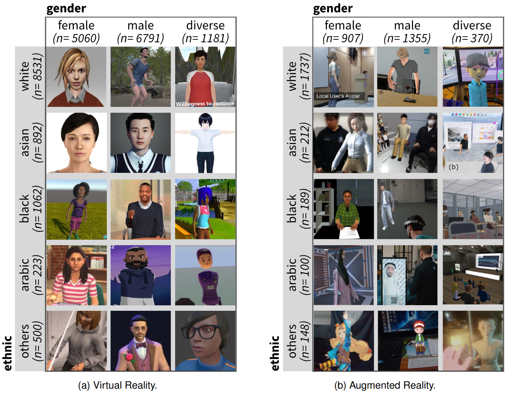

A Large-Scale Quantitative Analysis of Avatars in VR and AR

(opens in new tab)
Venue. TVCG (2026)
Materials.
DOI(opens in new tab)
PDF(opens in new tab)
Received a best paper award at the IEEE VR 2026 Conference
Abstract. Avatars play a central role in virtual and augmented reality (VR/AR), yet little is known about how they are represented in research. To address this gap, we collected and analyzed 14440 avatar images from 4659 publications. Every image was hand-labeled for gender, ethnicity, body representation, and visual style, and linked to publication metadata such as keywords, affiliation, and year. Our large-scale analysis yields 14 findings: for example, the dominance of realistic white male avatars in VR studies, the use of lower-fidelity and more gender-diverse bodies in AR, the post-2021 rise of stylized designs and diversity labels, and the mismatch between the amount of female keywords and their avatar occurrences. Based on our findings, we offer practical implications for avatar designers and researchers, such as adopting balanced starter libraries, employing bias dashboards, and using simple representation checklists. These steps can help future VR and AR platforms reduce bias and improve representations in avatar systems.
Link to this page: